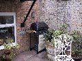
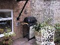

Standard

Fast Shutter

Night scene
Landscape

Slow Shutter
Did an experiment based on the effect that the various different modes from the Image menu could have on an image, specifically aperture and shutter speed.
(5 images.)| 
Standard |
Fast Shutter |
Night scene | 
Landscape |
|
Slow Shutter |